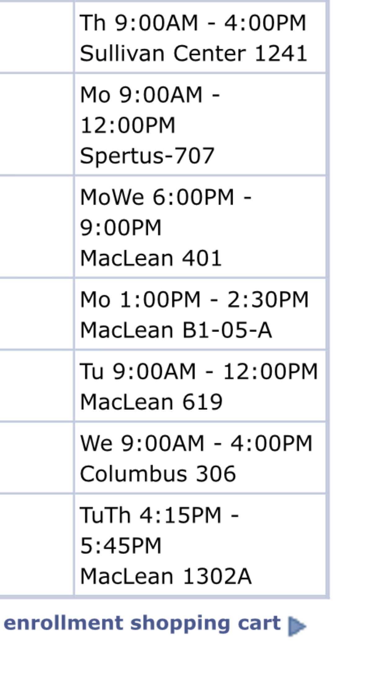

[ In this project the artist choses color in the head of the page to shoe his mood of the day. belwow the colored image, there are pcitures that show the most memerable moment of the day. video and images embeded on pages are related to the mood of the atist. Various Browsing history, everyday desktop and iphone screen shots, and photos that the artist Kyle Teng take in spacific dates creats a short diary of few days. 